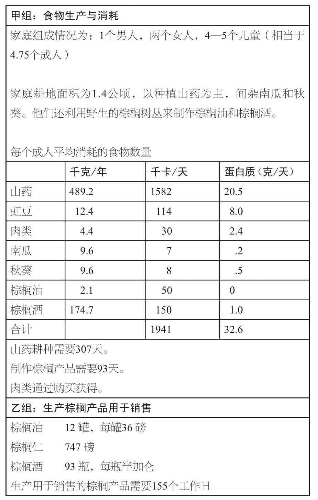
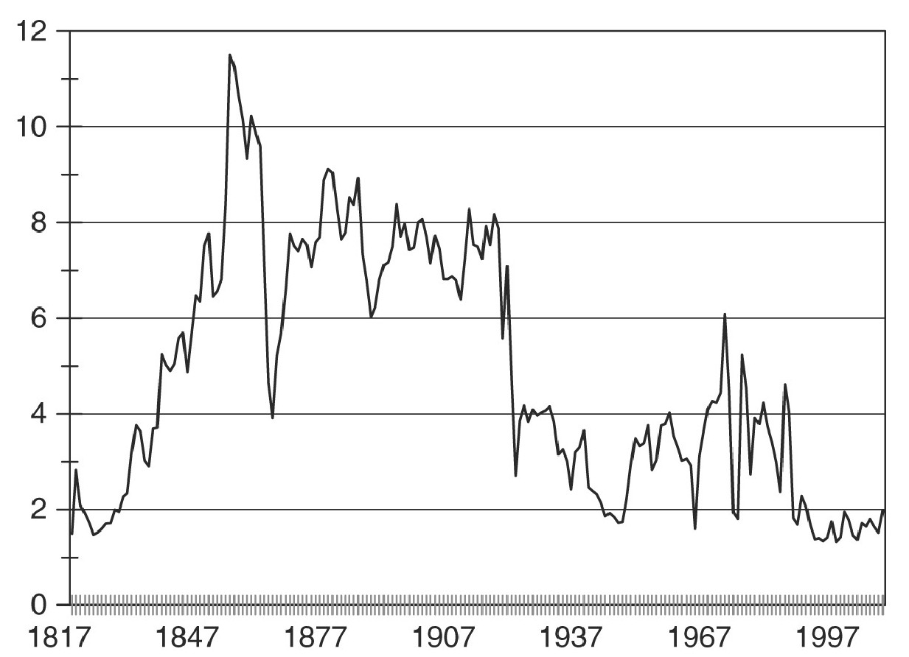
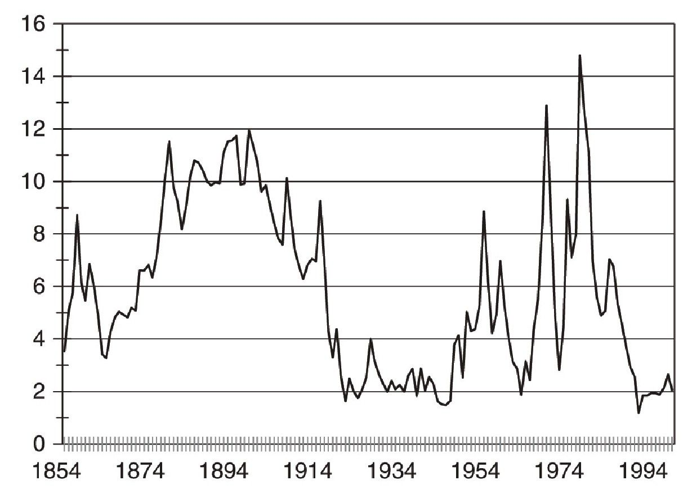
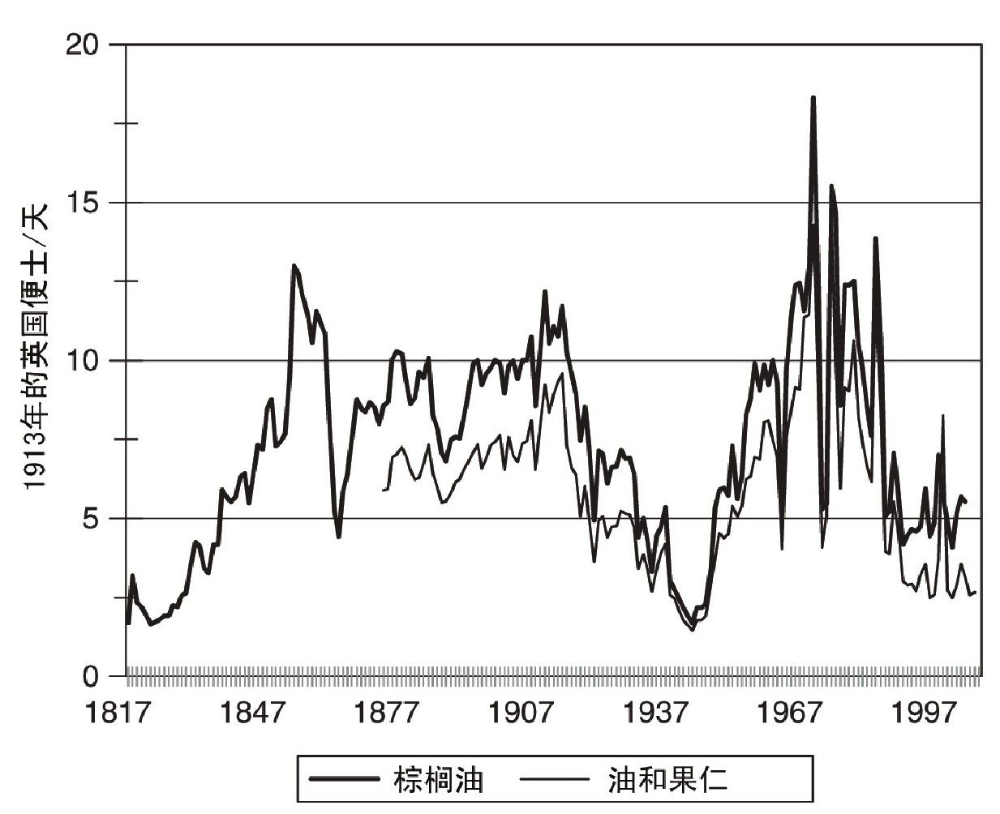
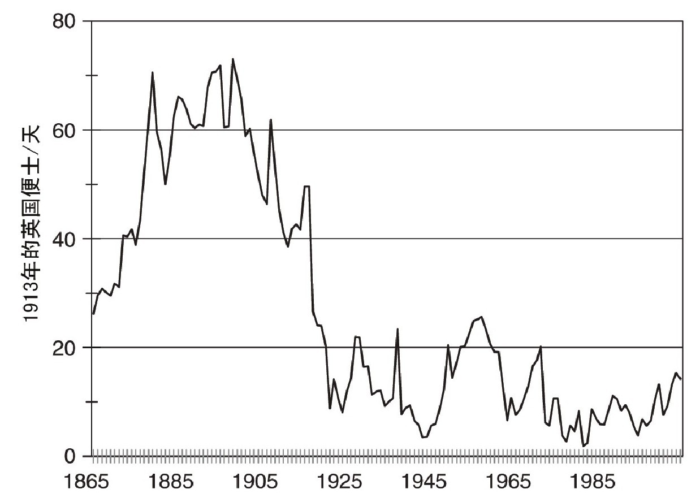

非洲的贫困由来已久。早在1500年，撒哈拉沙漠以南的非洲地区就是世界上最贫困的区域，现在依然如此——虽然期间当地的人均收入有所提高。本章将会分析，究竟是哪些结构性因素和偶然事件让非洲一直陷于贫困之中。
候选“短名单”很长。西方社会的某些人依然存有殖民观念，在他们看来，非洲之所以贫困，是因为非洲人懒惰或智力低下，但这其实只是他们的想象。有些解释更为复杂，其中一种认为，非洲人受到传统观念或非商业价值观的束缚。但上述说法都经不起历史检验。
关于非洲贫困原因的制度性解释也颇为盛行。非洲的奴隶贸易很普遍，而且如今非洲最贫困的国家就是历史上输出黑奴最多的那些国家。然而按照现今的生活水平来看，即便是那些极力抵制奴隶贸易的国家也极度贫困，因此这并不是原因所在。殖民主义是另一种流行的解释，因为在许多地方，殖民政策的目的就是要将财富从非洲人那里转移到欧洲人手中。虽然说，非洲在殖民统治时期经历了一定的发展，但欧洲人组建的政府并没有开启现代经济增长。在相信依附理论的人看来，非洲落后的原因在于全球化程度过高，因为他们认为非洲一心出口初级产品，这一做法从长远来看对非洲不利。此外，近来许多评论者强调，非洲政府腐败成风，对经济横加干涉，并且采取独裁手段，这些才是造成贫困的主因。如果落后的国家改由西方人组建的政府加以管理，非洲经济将会腾飞——不过，前提当然是这些外国人在二次管理时做出正确的选择。
要想明白为什么非洲现在处于贫困状态，我们必须先了解，为什么在1500年时非洲就已陷入贫困。答案涉及地理、人口以及农业的起源。1500年，当时的社会结构和经济结构决定了非洲大陆怎样应对全球化和帝国主义的入侵，而那些措施导致了此后的长期贫困。
撒哈拉沙漠以南的非洲地区在1500年时很穷，因为那里并没有先进的农业文明。当时世界上具备先进农业文明的地区只有几个：西欧、中东、波斯、印度的部分地区、中国和日本。这些地区有可能迎来工业革命。包括非洲在内的世界其他地区不可能出现工业革命。这就是为什么在谈到发展差距的时候，非洲总是被排除在外。
农业文明拥有许多非洲缺乏的优势，比如高产量的农业、多样化的制造业以及现代经济增长所必需的制度与文化资源。这些资源包括土地的私有产权和没有土地的劳动者，还包括用于管理财产和商业活动的文化因素，比如书写能力、土地测量、几何学、算术、标准化的度量衡、硬币以及一整套司法体系。这样的体系建立在书面文档之上，并且需要能够处理此类文档的官员。要想发展贸易，要想促进知识、数学和科学的发展，要想促成现代科技的发明与扩散，这些文化因素必不可少。撒哈拉沙漠以南的非洲地区不具备这些前提条件，东南亚的大部分国家、澳大利亚、新西兰、欧亚大陆的北端、波利尼西亚以及美洲人口较少的地区同样如此。
非洲的历史发展轨迹受到早期农业以及农业与人口关系的影响。大约在公元前3000年，非洲人从中东地区引入牛羊，开始在撒哈拉地区放牧（当时这一地区比现在湿润）。与此同时，他们开始在尼罗河流域和埃塞俄比亚高原种植小麦和大麦。后来，埃塞俄比亚人开始种植画眉草、龙爪稷、芝麻、芥、象腿蕉和咖啡，丰富了当地作物的品种。混合畜牧业也开始发展，当地人用去势后的公牛来拉犁耕种，用牛羊粪便来施肥。此外，他们还投资修建梯田和灌溉设施。埃塞俄比亚是撒哈拉沙漠以南的非洲地区唯一产生先进农业文明的区域。大约在公元前2000年到公元前1500年，非洲人开始在乍得湖附近种植小米和高粱。当地农民也养绵羊，但他们并不像埃塞俄比亚人那样进行混合耕种。即使现在，当地人依然轮流种植高粱和小米，并且使用锄头耕种，而不是用去势后的公牛来犁田。最后，山药和棕榈油构成了雨林地区的农业基础。尼日利亚最先种植山药，现在当地的产量很高。雨林地区没有畜牧业，因为雨林盛产的舌蝇会传播昏睡病，造成当地的马、牛和羊大量死亡。
当新的机会出现时，西非地区的农耕体系及时做出了反应。从1世纪到8世纪，当地从亚洲引入新的作物，包括香蕉、大蕉、亚洲山药、芋头和豆类。16世纪，当地从美洲引入了玉米、木薯、落花生和烟草，作物品种再次大幅增加。这些新品种迅速成为当地的“传统”作物，从这一点也可以看出，不能以“不变的传统”来解释非洲的贫困。
和世界其他地区一样，在非洲作物的培育使得永久性的村落形成，同时生育率也随之提高。埃塞俄比亚高原不存在热带疾病，因此当地人口迅速增长。随着土地变得稀缺，国家和贵族阶层通过出租土地或收税来获取资金。原本属于集体所有的资产变为私有。与此同时，人们不再拥有随处耕种的权利，因此出现了没有土地的劳动者。公元前8世纪，位于埃塞俄比亚北部和厄立特里亚地区的迪姆特王国建立起来。当地农业以犁耕和灌溉为基础，人们对铁器有所了解，并且形成了书面语言。在迪姆特王国之后出现的阿克苏姆王国面积更大。
由于热带疾病导致了高死亡率，西非地区的人口增长受到限制。就在种植山药的农民着手清除雨林的时候，最致命的一种疟疾以及传播这种疾病的蚊子（恶性疟原虫和冈比亚疟蚊）开始出现。这些清理出来的空地很可能助长了疾病的传播。其他热带疾病（如昏睡病）也起到了作用。
西非依然是一片拥有广袤土地的农耕区，在那样的环境下，轮耕是恰当的。雅科人就是这样做的。他们住在尼日利亚东部的雨林中，以种植山药为生。20世纪30年代，乌莫尔地区的雅科人村庄拥有40平方英里可用于耕作的土地，但每年实际种植的土地只有大约3平方英里。收获之后，雅科人在接下来的六年时间内任由这片土地重新变成荒野，同时清理出新的土地来耕作。在允许土地休养生息的情况下，40平方英里的土地中只有21平方英里被用于耕作。剩余的土地留给孩子或任何需要土地的人使用。因此，村庄里不存在没有土地的劳动者，也没有购买或租借土地的需求，因为任何人都可以在不损害他人利益的情况下清理出新的空地。
种植山药以及从棕榈树中提取棕榈油和棕榈酒的工作量并不大，但提供了足够多的食物。表5中的甲组显示了乌莫尔地区典型的雅科人家庭所生产的食物。这个家庭包括一个男人、他的两个妻子和四五个孩子。他们每年种植1.4公顷的山药和一些芋头，中间夹杂种植了豇豆、南瓜、秋葵和其他植物。他们的饮食以素食为主——只有少量打猎得来的肉，还有一部分买来的肉（加入山药作为调味品）。此外，这个家庭每天要消耗一定数量的棕榈油和半加仑的棕榈酒。他们摄入的能量换算下来，相当于每个成年男性每天摄入1，941卡路里。这些人处于最低生活水平。家庭里的三个成人每年总共要花费400个工作日，用于耕种菜地和加工棕榈产品。在欧洲人到来之前，非洲人的消费模式很可能都差不多。
表5 雅科人的收入，20世纪30年代

非洲人口稀少，运输成本高昂，这些因素导致当地很难出现足以满足大规模市场需求的专业化的制造商。早在公元前1200年左右，西非地区就出现了铸铁业，但总产量很低。大草原地区的人们种植棉花，并且使用手工织布机来织布。棉纺织业的中心在卡诺附近，但是棉纺织业和铸铁业一样，产量很低。大多数人并不是从制造商那里购买产品，而是自行制造简陋的器具，并且用树皮当衣服。因此，当地的消费品种类有限。人们种植的食物只用于满足自身需求，因为即使有多余的产品，也没什么可买。耕种只占全年时间的一部分，剩余时间他们就享受闲暇。
这一生产体系带来两种政治风格。第一种称为团队或部落，这是由某个地区的耕种者所组成的联盟。它可以组织土地分配，并且解决因土地使用而产生的纠纷。部落中的男性组成了民兵队伍，保护自己的领土不受其他群体侵犯。这些部落的领袖是“酋长”，他们借助信仰来维持自身的地位。这种政治体系相对而言较为平等。
轮耕具有一个特点，那就是耕种者享有大量的休闲时间，这最终导致了等级制的社会组织出现。如果劳动者被迫工作更长时间，他们将生产出更多食物，超过最低生活水平，而那部分剩余产品足以让某些人或（在政治层面上）一支武装力量完全脱离生产。在摆脱生产和享有特权的双重诱惑下，采取奴隶制就是理所当然的了。维持奴隶制的困难之处在于，空旷的地理环境让奴隶们有机会逃跑，并且有办法谋生。20世纪的法属刚果就有这样的例子：为了逃避兵役或橡胶园中的强制劳动，村民们逃入灌木林中，并在那里靠着四处搜寻食物生活了许多年。非洲的酋长转而到其他地区抓捕奴隶，被捕的人不懂当地语言，也不知道如何在当地生存，因此无法再用这种手段来逃避。当然，他们的孩子知道该怎么做，因此奴隶制在当地时常只限于一代人，奴隶的孩子被当地部落接纳为新成员。在欧洲人到来之前，奴隶制在非洲已很普遍，是许多国家的经济基础。
虽然当时的非洲已经出现了各个国家，但这些国家与成为先进农业经济体的国家形式有所区别。农业国家可以通过征收土地税或出租国家财产来获取收入。但这种做法在非洲行不通，因为当地拥有丰富的土地资源，土地并不值钱。这样一来，先进农业社会用来组织私人财产的各种法律和文化制度，比如测绘、算术、几何和书写，在非洲都无法实现。只有西非大草原的几个帝国（如加纳、马里和桑海）是例外。农田都归集体所有，奴隶制普遍存在。但国家的收入主要依靠商品税，并且征税的对象是横跨撒哈拉地区的贸易活动和黄金生产（而不是农业）。这些帝国都信奉伊斯兰教，宗教信仰帮助当地人掌握了书写能力，并且确立了财产法，可以解决当地的行政问题。
欧洲人的到来给原本实行轮耕制的社会带来了重大变化，因为欧洲人引入的商品种类远多于当地人原本拥有的物品种类。很快，美洲的土著人、波利尼西亚人或非洲人都意识到，棉布做的衣服远比树皮舒服，枪炮远比长矛厉害。1895年，玛丽·金斯利经过加蓬地区，在她的笔下，大多数非洲人。
在这方面，非洲并不是唯一发生变化的地区。在法国人到来之前，加拿大的休伦人用滚烫的石头将水烧开，然后将开水灌满挖空的树桩，用来烧饭。法国毛皮商人随身携带的水壶给当地人留下了深刻印象，他们甚至认为，制造出最大的水壶的那个人一定就是法国国王。为了购买欧洲人的水壶、斧头和布料，当地人需要东西用于出售。他们最终确定特色物产之后，就开始增加工作时日，以便扩大出口。在北美，当地物产是毛皮。大约在1680年，一个密克马克人和一个来自法国的方济各会修士开玩笑：
西非将黄金出口到地中海周边地区和阿拉伯世界，但在16世纪当地出现了一类更为重要的出口业务——奴隶贸易。美洲的糖料种植园需要大量劳工，要满足这种需求，最廉价的方式就是购买劳动力。1526年，刚果国王阿丰索一世（他试图让他的臣民改信基督教）向葡萄牙国王若昂三世抱怨：“我的臣民中有许多人极其渴望得到贵国的商品，这些商品由您的臣民输入我国。为满足此等贪欲，他们抓走了原本自由的黑人臣民……（并且）将他们贩卖给”沿海地区的奴隶贩子。在17世纪，某些素来以奴隶制为立国之本的王国，比如达荷美和阿散蒂，开始通过战争和搜捕的方式来满足外部需求。抓获的黑人被送往沿海地区，在那里他们被贩卖给欧洲商船。非洲的国王们用这部分收入来购买枪炮（这加强了他们的力量，进一步帮助他们搜捕黑奴）、纺织品和酒类饮品。从1500年到1850年，1，000万至1，200万奴隶被贩卖到新世界。此外，在整个撒哈拉地区以及红海和印度洋周边地区，也有数千万人被贩卖到亚洲。
18世纪，启蒙思想家和宗教人士开始反对奴隶制。1807年，大英帝国禁止奴隶贸易。新的出口品，即所谓的“合法贸易”，取代了奴隶。最早出现的替代品是棕榈油，欧洲人将其用作机械设备和铁路设施的润滑剂，同时也将其用于制造肥皂和蜡烛。1842年，黄金海岸的一名英国法官弗朗西斯·斯旺齐向英国议会的特别委员会汇报，新的出口贸易促使非洲人更为积极地工作，因为他们获得的报酬可以用于购买消费品：
英国出口到西非的商品中，棉布占了一半还多，其他商品主要是金属和金属制品（包括枪炮）。在被问到非洲人怎么可能买得起英国产品时，斯旺齐这样回答：
棕榈油被运往沿海地区，这个商业网络就是之前贩卖奴隶的关系网。尼日利亚是最大的出口国，但生产散布在西非地区的各个角落。19世纪中期，棕榈的商业潜力被进一步开发出来，因为人们发现，用棕榈果仁生产出的一种油很适合用作人造黄油的原料。棕榈油可以在种植园采集，但主要还是由个人采集野生棕榈果实来加工生产。比如，在20世纪初，尼日利亚共有240万公顷的野生棕榈被用于生产，而种植园面积只有7.2万公顷，私人农场的种植面积也只有9.7万公顷。之前我们曾说到，一个典型的雅科人家庭每年要花费155天来进行生产，共计生产出12罐4加仑装的棕榈油（每罐重36磅）、超过700磅的棕榈仁以及93瓶半加仑装的棕榈酒，这些产品都在当地销售。他们购买的商品主要是布料和衣物，但他们同时也购买餐具、家用器皿、化妆品、装饰物（这些都是进口的），还有肉类。
鉴于非洲人生产棕榈油是为了购买欧洲商品，因此他们的动力取决于每一罐出售的棕榈油所能换取的布料数量。图17显示了在西非各个港口从1817年到现在棕榈油相对于棉布的价格比率。从1817年到19世纪中叶，棕榈油相对于棉布的价格大幅上升。在这一时期，非洲人用同等数量的棕榈油可以换得越来越多的棉布，这促使他们扩大了生产。英国的进口量从1800年的每年几吨增加到19世纪中叶的2.5万吨，最后一路攀升到第一次世界大战前夕的将近10万吨。
棕榈制成品并非西非唯一的出口产品。可可是另一种深受欢迎的产品。可可豆原本生长在美洲，19世纪时被引入非洲。19世纪40年代至80年代，可可相对于棉布的价格比率在英国翻了一番（参见图18）。这促使非洲人（而不是欧洲人！）尝试生产可可。19世纪90年代，加纳开始大规模种植可可。由于当地原先并没有野生的可可，人们必须在森林中清理出空地，专门用于种植。这种做法对于财产的集体所有制构成了挑战，在土地归集体所有的情况下，任何部落成员都可以占用空地进行生产。为了促进可可产业，非洲人修改了他们的财产制度。其中一种解决办法是把树木的所有权与土地的所有权分离开来，这样不管周围的土地上是哪些人在种植山药或木薯，种树的人都能得到回报。
克罗博人采取了一种更为激进的措施。一群克罗博人集体出资，从其他部落手中购买土地，然后他们将土地分为若干份，每人分到一小块属于自己的土地。等到手中的土地开发完毕，他们就继续购买新的土地。就这样，他们一路向西横穿加纳，最终来到科特迪瓦。这时许多克罗博人拥有的土地零星散布在这些国家境内。他们自行耕种其中的一些土地，并将另一些租给别人。迁移并建立新家园需要大量投资，这笔钱来自克罗博人已经从可可树中赚得的收入。克罗博人的举动就像是马克斯·韦伯所描述的新教伦理在实际生活中的应用。

图17 棕榈油相对于棉布的价格比率

图18 可可相对于棉布的价格比率
欧洲人的殖民行为始于葡萄牙人，他们于15世纪和16世纪在如今的几内亚比绍、安哥拉和莫桑比克建立起了定居点。欧洲其他强国也在西非沿海地区建立起要塞，以便进行奴隶贸易。1652年，荷兰人在好望角建立定居点。到了19世纪，欧洲人的殖民热情更加高涨，但直到19世纪末，各国势力才正式瓜分了非洲大陆。
建立殖民地既有经济原因，也有战略考虑。欧洲人希望这些殖民地可以为本国提供热带物产，同时也成为本国制造品的新市场。另外，这些殖民地也为欧洲人提供了定居场所，并且为资产阶级提供了投资获利的机会。此外，帝国被赋予了文明教化的使命，殖民者应该致力于传播基督教，并将当地文化提升到欧洲水平。按照殖民者的预期，这些目标将在不损耗帝国力量的情况下完成，因为殖民政府可以自给自足。
殖民行为对于非洲经济造成的伤害大于世界其他地区。欧洲人在非洲的殖民活动建立了非常糟糕的制度。和之前的北美殖民地一样，早期的非洲殖民地实行“直接统治”，也就是说，殖民政府在管辖范围内，用宗主国的法律来管理殖民者和土著人，虽然后者经常得不到选举权。但到了19世纪晚期，直接统治被“间接统治”所取代。这样做的目的是为了让土著人甘心接受殖民统治，具体做法是将各个民族区分开来，并向那些投诚的地方领袖提供权力和财富以换取他们的支持。在这一体系中，殖民政府用城市法律来管辖殖民者，并且仅限于城市范围内。控制乡村土著人的任务交给了各个“酋长”，他们在“部落”内部按照“习俗”行事。我将上述几个词加上引号作为强调，因为它们是殖民地的法律概念，与殖民之前的历史用法没有必然联系。非洲的全部政体，从阿散蒂那样的王国到结构最松散的团体，都被当作是具有统一习俗的平等实体，虽然一些较为复杂的政体中包括了被他们征服的对象，后者具有不同的习俗。新的酋长开始治理加纳北部和尼日利亚东部等地，之前他们从未统治过这些地方。许多政体之前具有流动性，人们有权离开压迫他们的政府，对于独裁统治者来说，这是一种制约措施。后来人们被迫加入部落，并且不得离开，他们就此失去了选择权。当地的习俗经过重新界定，以适应殖民统治的需要。类似奴隶制的“野蛮”习俗被废除（虽然在实践中依然存在），有用的习俗（比如酋长享有特权，不劳而获）得以保留。这样一来，强制劳动成为殖民地的通行做法。土地集体所有制往往变成一种习俗，因此人们只有加入某个部落，才能获得耕地——并且必须得到部落酋长的同意，他们都听命于酋长。新酋长通常经由传统步骤产生，但无论如何，任命权归属殖民者。殖民时期的酋长相比殖民前的统治者拥有更大的权限。新酋长实际就是帝国的工头，负责征税，强迫劳役，并且利用手中职权大肆敛财。殖民统治创造出一大批地方独裁者来治理非洲乡村。
在非洲殖民地所施行的政策和后来在印度及其他地区所施行的政策一样，对于当地经济造成了严重伤害。在19世纪的标准发展模式中，殖民地政府只采取了一项措施，那就是改善交通。到第一次世界大战为止，撒哈拉沙漠以南的非洲地区开通了3.5万公里的铁路。修路资金来自私人投资（往往由政府出面担保），修路的目的在于将非洲内陆地区与沿海港口联结起来，以方便初级产品的出口。殖民政府并没有用关税收入来发展制造业，而是将关税保持在低水平，只求获得收益。因此，殖民地经济完全融入了世界市场。随着海上运输费用和横跨非洲大陆的陆地运输费用的下降，欧洲制造品在非洲的价格下降，初级产品的价格上涨。对此，当地经济做出了调整。棕榈油和花生等初级产品的产量和出口量迅速上涨，而卡诺地区的棉纺织业产量下降。全球化意味着非洲沦为初级产品的专业化生产地。
殖民政府没有采取任何措施来教育非洲人。这一任务交给了基督教传教士、穆斯林学校和其他独立运作的项目。他们的努力取得了一定的成绩，克罗博人的进步尤为明显，他们的商业行为促使他们掌握了读写能力，并且他们有足够的收入来支付教育费用。但直到非洲殖民地获得独立时，当地人的整体读写能力还停留在非常低的水平。殖民政府同样没有创办银行来支持投资。一些殖民地采取措施，激励外国投资，但非洲人为此付出了代价，因为外国投资者得到了当地资源的所有权。在这方面，不同殖民地之间存在着显著差异。
首先来看西非的英国殖民地。这里是间接统治政策的诞生地，同时也是这一政策的实施典范。这里的大部分地区由酋长治理，并且对欧洲人获取土地加以限制。比如1907年，威廉·利弗想在尼日利亚得到大片土地用于种植油棕，但遭到了拒绝。
德国、比利时和法国在西非殖民地所采取的土地政策和劳动政策对于当地人来说就没那么有利了。殖民政府征用土地，交给欧洲投资者来建造种植园或开采矿石。比如，比利时人就允许联合利华公司在刚果建立油棕种植园。非洲人被迫到种植园劳动或建造铁路。
和位于西非的英国殖民地正好相反的是欧洲移民建立起来的殖民地。南非是一个最极端的例子，但津巴布韦和肯尼亚高地也有类似的强行征用土地的情况。
当英国人于1806年占领开普敦时，当地有大约2.5万名荷兰人、德国人和法国新教徒。到1850年时，欧洲移民增加到10万人。随着当地陆续发现钻石矿（1866年）和金矿（1886年），移民人口迅速增加，到1900年时已超过了100万。与之相比，从1800年到1900年，非洲土著人口仅仅从150万增加到350万。自1835年，布尔人从开普殖民地出发进入德兰士瓦，从当地土著人手中夺取了大量土地。这些布尔人建立起奥兰治自由邦和南非共和国。1899年至1902年，布尔人与英国人之间爆发了战争，布尔人战败后，他们的地盘都被并入南非。在夺取土地所有权方面，英国人丝毫不逊于布尔人。1913年颁布的《土著人土地法案》是这场土地掠夺运动的高潮，根据这项法案，非洲土著人在保留居住地以外的任何地方购买或租赁土地都属于非法行为。然而，尽管土著人占到总人口的2/3，他们的保留居住地只占到南非领土面积的7%。
移民建立的其他殖民地情况类似，但没有那么极端。比如，在津巴布韦，当第一次土地改革于2000年开始时，4，500名白人农场主拥有1，120万公顷最好的土地，而100万黑人家庭则居住在1，640万公顷相对较差的集体所有的土地上。在这种情况下，房地产法作为一种法律体系，保护了特权者的利益，而不是鼓励所有人通过互惠交易来促进各自的利益。
迫使土著人与土地分离的政策既是为了获取他们的土地，同时也是为了将他们用作劳动力。19世纪60年代，牧师J.E.卡萨利注意到，掠夺土地的目的在于：
用于控制劳动力的种族隔离制度进一步巩固了这一目的，这一制度对待黑人的态度就好像他们虽然居住在保留地里，但整体上只不过是这个国家的外来劳工。
19世纪早期，西非开始了一段和北美殖民地颇为相似的发展旅程——当地经济以外贸为导向，在全球市场高价的激励下，非洲人大肆砍伐雨林，由此获得的收入被继续投入商业活动。不过，这一切没能启动现代经济增长。原因何在？
这一现象既有直接原因，也有潜在根源。直接原因体现在图17和图18中。这两幅图显示，自20世纪初期以来，棕榈油和可可的真实价格一路下跌，在30年代和二战期间降到低谷。棕榈油（相对于布料）的价格从未回复到一战前的水平，如今的价格更是比30年代的价格更低。生产可可的国家情况略好一些——但可可种植者的日子并不好过。二战之后，世界市场的可可价格疯狂上涨，最高价位远超19世纪90年代的水平。但在一些主要出口国（比如加纳），从收入增长中获益的是国家，而不是农户，因为可可种植者被迫将他们的产品卖给一家国有的市场营销机构，由后者在国际市场统一出售。表面上，营销机构以稳定的价格向种植者收购可可，从而保护后者免受价格波动的危害；实际上，这些营销机构像苏联的政府采购部门那样，获取了国际销售所带来的大量收益。由于将国内收购控制在低价位，这些市场营销机构压制了农户扩大生产的积极性，同时也导致农民无法摆脱贫困。

图19 棕榈油每天带来的收入
价格变化直接影响到农户的真实收入变化。图19显示了一户雅科人家庭在同时生产棕榈油和果仁的情况下，每天得到的真实收入。前提是，他们的生产效率没有发生变化——当时的确如此。源自棕榈油的收入变化曲线和价格变化曲线保持一致。自1980年以来，棕榈生产者的真实收入没有提高，还是和20世纪30年代一样处于低水平。可可生产者经历了类似的长周期的价格回落，但他们错过了20世纪六七十年代的收入增长，因为那些市场营销机构并没有将世界市场高价位所带来的收益分给可可种植者（参见图20）。
如今，可可生产者每天获得的收入就购买力而言，相当于1913年的10便士。这是当时加纳阿克拉地区一名体力劳动者所能挣到的工钱。棕榈油生产者的收入只有5便士。非洲所有的出口农产品都面临同样的困境。由于约60%的非洲人从事农业劳动，因此农业收入决定了整个经济体的收入。非洲人之所以贫困，就是因为非洲大陆的农业生产所带来的收入只能维持一战时期的生活水平。

图20 可可每天带来的收入
两个原因决定了非洲农业无法获得更多的收入。首先，出口农产品的价格下跌。造成这一现象的原因有三点。第一，出现了更为廉价的替代产品。19世纪下半叶石油产业的出现带来了新的润滑剂。相比棕榈油而言，这种新产品效果更好，价格更低。另一种石油衍生品煤油则将棕榈油衍生品硬脂精从蜡烛生产过程中淘汰出去。当然，蜡烛本身也被煤油灯以及之后出现的电灯所替代。第二，亚洲农产品生产者加入竞争。20世纪初期，苏门答腊和马来半岛的大型种植园就已经开始种植油棕。相比西非地区，这些种植园更适合油棕的生长。自二战以来，马来西亚和印度尼西亚的出口产品主导了国际市场，从而压制了非洲出口产品的价格。第三，非洲地区的生产规模扩张。对于可可价格而言，这一因素尤为重要，因为大部分可可依然产自非洲，并且在巧克力生产过程中，没有合适的替代品来取代可可。可可的种植区域向西拓展，横穿加纳，一直到科特迪瓦境内。生产所需的劳动力来自西非的贫困地区。产量提高了，价格却下跌了。就此而言，非洲的贫困是一种恶性循环，因为低工资导致出口产品价格低廉，反过来低价格又进一步压低了工资。
其次，可可和棕榈油无法带来更高的收入，因为这两种产品生产率较低，没有取得技术进步。原因与生物研究有关。德国人和比利时人对油棕进行了基础研究，意想不到的是，研究结果损害了非洲地区的利益，反倒是东南亚地区从中获利。和其他大陆相比，几乎没有研究致力于改进非洲的作物。
机械化是生产效率提高的另一个原因。在生产棕榈油的过程中，大多数劳动力都被用于加工刚摘下来的果实。传统方法包括堆积、发酵、煮熟、捣烂、踩碎、浸泡、撇去杂质和压榨。捣烂果实用的是棍子，踩碎靠的是双脚，诸如此类。种植园内的果实加工已经机械化，但村庄里的技术进步却很缓慢。用于压榨果实和出油的简单机械大幅减少了对于劳动力的需求，但同时也要求投入更多资本。这些机械在西非地区的小村庄里无利可图，因为当地的工资水平非常低。在第四章里我们讨论过技术陷阱，这就是一个鲜活的例子。当地的低工资意味着采用机械技术无利可图，因为这种技术只有在提高工资的情况下才会被采用。无论如何，没有必要将劳动力从棕榈油加工业中解放出来，因为当地的非农业人口已经超过了农业之外的工作的数量。
劳动力市场的这种不均衡状况反映了过去五十年的发展。首先是人口增长。自1950年起，人口增长了5倍。由于非洲方面能提供的数据有限，我们不可能得出确切的解释，但其他热带地区的经验表明，造成人口猛增的直接原因是死亡率的下降，尤其是婴儿和老人的死亡率。这很可能得益于公共卫生事业的发展以及现代医学的普及。
其次，非洲在这一时期没能实现工业化。对此的解释既有经济因素，也涉及更为宽泛的制度因素。就非洲地理与历史而言，这些解释都说得通。
关于非洲缺乏工业有三种经济解释。第一种是比较优势论。由于小麦生产是土地密集型产业，并且美国地广人稀，因此北美向欧洲出口小麦。非洲的人口密度甚至比美国的还低，因此它的比较优势在于生产那些大量使用土地和自然资源的产品，也就是它所出口的农产品。在美国，与丰富的土地资源相对应的是高工资。19世纪时，如果没有关税保护，美国的制造业相比进口产品毫无竞争力可言。但非洲的情况不一样。当地工资水平低，但制造企业却发现在那里无利可图。原因很可能是因为，当地生产效率低下，导致生产成本过高。生产效率低下的原因之一可能是劳动者未受过教育。然而过去的数十年间当地教育已经取得了飞速发展，年轻劳动者普遍接受过教育——但这些进步并没有产生显著的经济效益。
生产效率低下的另一个原因是缺少互补企业的支持。在富裕国家，工业生产在都市网络中进行，各种类型的企业通过提供专业化的产品和服务来相互支持。这些“外部规模经济效应”提高了生产率，公司得以在保持自身竞争优势的同时，支付较高的工资。非洲则是陷入了恶性循环——企业网络永远都无法建立，因为所有企业都发现，在缺少支持的情况下，在当地开展业务将无利可图！19世纪，非洲曾有机会建立类似的网络。当时非洲有零星散布的钢铁厂，卡诺地区有纺织业，还有其他类似企业，但殖民主义支持下的全球化进程扼杀了这些萌芽。
最后一种经济解释与技术有关，它将农业机械化的相关分析应用到工业领域：非洲的工资水平太低，因此采用资本密集型的现代工业技术将无利可图。非洲陷入了另一种困境：机械化的工业发展是提高工资水平的办法，但现有的低工资却让机械化变得无利可图！
不过，多数人接受的一种解释认为，是制度因素而不是经济因素造成了非洲的贫困：“坏制度”的其中一个方面是肆虐的战乱。毫无疑问，战争对于企业来说非常糟糕。贫困本身就是战乱的原因之一，因为贫困导致招募军队的成本非常低廉。低工资导致战乱，后者反过来又限制了经济发展，从而导致低工资——这是另一个版本的贫穷困境。此外，有多次知名战乱都与非正式的殖民统治有关。比利时控制卢旺达的手段就是刻意将图西族与胡图族之间的差异夸大为虚构的种族分化。图西族被认为是外来的闯入者，他们在种族上更为优越，因为他们是圣经人物含的后代。胡图族则被认为是当地土著，在种族上低人一等。殖民政府将教育资源和各种机会都给了图西族，使得后者能够统治胡图族。然而，在1959年爆发的革命中，占人口多数的胡图族最终控制了整个国家。1990年，当图西族的军队入侵该国，并且击败了以胡图族为主的卢旺达军队后，图西族威胁要夺回胡图族自1959年以来所获取的利益，这也为后来的种族屠杀埋下了隐患。
“坏制度”的另一个方面是腐败和许多国家表现出的非民主特色。这些缺陷也是殖民时期的政府架构遗留的影响。新近独立的非洲各国继承了原来的宪法体系，其中既包含了种族分化的内容，也保留了非正式统治所采取的部落架构及行政架构。非洲各国在消除种族主义方面成效显著，但在消除部落制方面却颇为不顺。大多数国家对于城市地区和农村地区有着不同的管理体系。用于城市的是现代化的法律体系，而农村地区则被划分成不同的“部落”区域。这些区域创建于殖民时期，现在依然由酋长来管理，管理的依据是殖民时期的习俗，包括土地集体所有制。于是经常会出现这样的局面：殖民统治依然在延续，但这一事实被国家采取的统一的法律体系所遮掩，这一法律体系将现代司法与传统习俗杂乱拼凑在同一个法律文本里。因此，非洲的大部分农村地区都由一批未经选举产生的腐败的统治者来治理，这些统治者可以强行榨取当地人的收入或者要求后者免费提供劳役，同时他们还向本国政府要求收取租金。
对农民阶层进行控制也是出于经济目的。20世纪60年代的意识形态将经济发展看作是牺牲农村地区以换取城市经济增长的过程。殖民国过去曾利用间接统治的形式来管理乡村地区，为殖民统治服务。殖民者扶持酋长，就是想利用他们对于集体土地的“传统”所有权，促进经济的发展。他们还威胁要赶走农民，以迫使农民接受农业革新。同时，农村地区居民被迫参与了基础设施和种植园的建设。此外，政府直接胁迫农民。尤其是，农民被迫将作物卖给国有的市场营销机构，由此政府可以将食物以低廉的价格卖给城市工人，并且出口的农产品可以征收高税率，办法就是低价收购农民手中的产品，然后再以高价在国际市场上出售。之前我们看到的可可的例子就是这样。这些做法对于工业发展没有多大作用，却压制了农民发展农业的积极性，助长了腐败风气和极权主义。
信奉极端主义的国家走上了一条看似不同的道路，但结局却颇为相似。这些国家在废除种族主义的同时，也废除了部落制。用莫桑比克首任总统萨莫拉·马谢尔的话来说：“国家要想存活，部落就必须消亡。”这些国家建立一党专政，意图压制分歧，保护发展。然而，彻底清除殖民主义没那么容易。原先的部落领袖变成了执政党的骨干，继续保有权势。以发展的名义，改革后的政府采取了殖民时期的经济发展计划——在这些地方重新出现了强迫劳动。非洲不可能轻易摆脱它的历史。